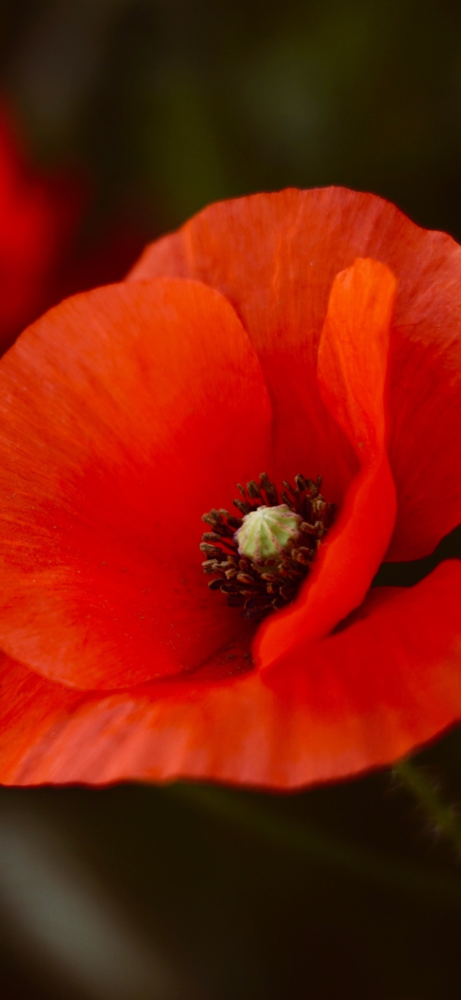

BACK TO SECTIONS
CONTINUE TO POPPY FIELD

Consolation.
A Study of the Colour Red.
Red, the colour at the long wavelength end of the visible spectrum of light.
Red shows itself first and foremost.
"I try my best to stay strong for my sisters too. Because if their big sister is not strong, then they will have no one else." -Dunia
"I am their... hmm not leader, but something better than that. I am their big sister. To me my two sisters see me as not just their
big sister, but someone who took care of them when we thought we had no one else. I stay here for my sisters, and I try to stay
strong no matter what happens." -Dunia
"My sisters are the most important things to me in this world." -Dunia
"Even though I am far away I always say to staria and sumer, 'I am ur big sister too'." -Dunia
"Le also means the world to me. She is my younger sibling across the world." -Dunia
To bravely stand out for the younger.
To be brave is to do it even if you're scared, rather than to not be afraid under any circumstances. Dunia is the perfect example
for that. Quiet and seemingly cold from the outside, her heart is filled with love and care for those around her. To encounter people
who care about others like the way she does is very unlikely. To find another Dunia in this world is impossible. Pun intended,
maybe.
To be selfless for those in need.
To put others above oneself despite the need of being understood. Dunia thinks about the conditions of the people she loves all day.
Are they feeling well today? What are they doing? Who are they with? Constantly running around in her mind, as if she herself
hadn't been going through enough. To focus on herself seems to be a very difficult thing for her, as she cares so, so much. Too
much.
To console those in woe.
To act as a counsellor, continuously helping all. Dunia's heart shatters for those suffering and does all she can to help. Does it
always go well? No, of course not. To help others without helping oneself, does anyone realise how hard it must be? To console like a
red poppy, petal by petal. To be aware of the harsh reality, to try to keep the positive thoughts working. To desperately share those
positiveness to others when, clearly, she is running out of it herself.
Red Poppies.
1. Sow the seeds right in the garden, outdoor containers, or deep seed-starting pots.
2. Poppies adapt to most soil except heavy clay.
3. Firm the soil. Don't bury the seeds!
4. Water regularly!
Like a red poppy, Dunia is in need of space. To trap her in an environment seemingly like prison, with too much horrible conditions,
how can she grow?
Like a red poppy, Dunia is in need of respect. To trigger her with things clearly known to hurt her, how can she be alright?
Like a red poppy, Dunia is in need of time. Take it slowly, take it easy. To lock her up just because one feels like it, how can she blossom?
Like a red poppy, Dunia is in need of care. To leave her all alone when she needs help, how can she stay healthy?